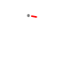

|  |
Physics Sample: PendulumBy Christian Thompson |
In this tutorial, we set up a pendulum simulation in which a rectangle pendulum swings freely from a circular anchor under the force of gravity. The pendulum is attached to the anchor using a pin joint. The pin joint is a type of constraint - something that restricts the motion of the objects it affects.